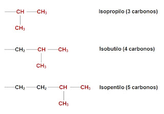
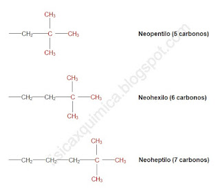
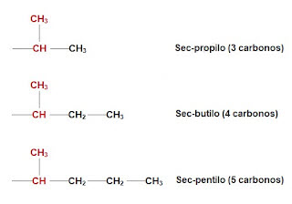
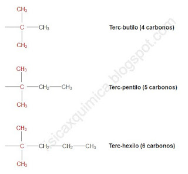

IES Valle del Alberche

📘 Enunciado
Los alcanos ramificados se obtienen sustituyendo uno o varios hidrógenos de un alcano lineal por radicales alquilo, también llamados sustituyentes.
Un radical alquilo se forma quitando un hidrógeno (H) al alcano correspondiente y cambiando la terminación -ano por -ilo:
Además de los radicales lineales (metilo, etilo, propilo…), existen sustituyentes tradicionales que se designan con los prefijos específicos iso-, sec-, terc- y neo-. Se pide reconocer, formular y nombrar correctamente todos estos radicales.




🎯 Objetivo
Al finalizar este bloque, el estudiante debe ser capaz de:
- Formar un radical alquilo a partir de un alcano, quitando un H y cambiando -ano por -ilo.
- Reconocer y escribir los radicales lineales básicos: metilo, etilo, propilo, butilo…
- Identificar la geometría característica de cada prefijo tradicional: iso- (forma de «Y»), neo- (forma de «+»), sec- y terc-.
- Establecer las equivalencias entre nombres tradicionales y sistemáticos (por ejemplo, isopropilo = sec-propilo = propan-2-ilo).
- Formular correctamente los radicales ramificados con sus hidrógenos correspondientes.
- Utilizar estos sustituyentes en la nomenclatura de alcanos ramificados.
⚙️ Fundamento teórico y procedimiento
| Alcano de partida | Radical | Fórmula |
|---|---|---|
| metano (CH4) | metilo | –CH3 |
| etano (C2H6) | etilo | –CH2–CH3 |
| propano (C3H8) | propilo | –CH2–CH2–CH3 |
| butano (C4H10) | butilo | –CH2–CH2–CH2–CH3 |
| Nombre tradicional | Carbonos | Fórmula | Nombre sistemático |
|---|---|---|---|
| isopropilo | 3 | –CH(CH3)2 | propan-2-ilo |
| isobutilo | 4 | –CH2–CH(CH3)2 | 2-metilpropilo |
| isopentilo | 5 | –CH2–CH2–CH(CH3)2 | 3-metilbutilo |
Cómo lo llamo ¿isopropil, propan-2-il... o 1-metiletil? Pulsame
Un mismo sustituyente alquilo puede recibir tres nombres distintos según el organismo, el contexto y el tipo de nomenclatura empleada. La clave está en que la IUPAC establece una jerarquía: existe un único nombre oficial para propósitos regulatorios, mientras que los otros dos son válidos en contextos de nomenclatura general.
1 Nombre Preferido de la IUPAC (PIN): propan-2-il
- ¿Quién lo usa? Es el nombre oficial y preferido por la IUPAC para cualquier contexto que requiera un nombre inequívoco y estandarizado (publicaciones, bases de datos regulatorias, etc.).
- Reglas de cadena y numeración: Se construye siguiendo las reglas de nomenclatura sustitutiva para grupos alquilo (regla IUPAC P-29):
- Se identifica la cadena carbonada más larga que contiene el carbono con la valencia libre (el punto de unión).
- Se numera la cadena comenzando por el extremo más cercano a la valencia libre, de modo que ese carbono reciba el localizador más bajo posible.
- Para el grupo (CH₃)₂CH–, la cadena más larga es de 3 carbonos (propano), y el carbono con la valencia libre es el C2 (el central). Por eso el nombre es propan-2-il.
2 Nombre tradicional o trivial: isopropil
- ¿Quién lo usa? Es un nombre retenido por la IUPAC para la nomenclatura general, pero no es el nombre preferido. Se encuentra en textos antiguos, en la industria química y en la enseñanza, pero no debe usarse como «Nombre Preferido de la IUPAC».
- Reglas de cadena y numeración: Al ser un nombre trivial, no se rige por las reglas de construcción sistemática (no se «construye» siguiendo un algoritmo de cadena más larga y numeración). Su estructura se memoriza como una unidad. El prefijo iso- es una convención que indica una ramificación en el extremo de una cadena, pero no responde a un sistema de numeración formal.
3 Nombre sustitutivo (CAS): 1-metiletil
- ¿Quién lo usa? Es un nombre sistemático aceptado en la nomenclatura general de la IUPAC, pero no es el nombre preferido (PIN). También es el nombre oficial utilizado por el Chemical Abstracts Service (CAS).
- Reglas de cadena y numeración: Se construye mediante nomenclatura sustitutiva, pero aplicada de forma diferente al PIN:
- Se elige una cadena principal base, que en este caso es el etano (2 carbonos).
- Se numera la cadena de modo que el carbono con la valencia libre sea el C1.
- Se identifica el sustituyente sobre esa cadena: en el C1 hay un grupo metilo.
- El nombre resultante es 1-metiletil: un grupo etilo con un metilo en la posición 1.
💎 Resumen de las diferencias clave
| Nombre | Estatus IUPAC | Uso principal | Lógica de construcción |
|---|---|---|---|
| propan-2-il | Nombre Preferido (PIN) |
Oficial, regulatorio, publicaciones. | Cadena más larga (3 C) con valencia libre en C2. |
| isopropil | Retenido (General) | Contextos no regulados, industria, enseñanza. | Trivial, no se construye por reglas. |
| 1-metiletil | Aceptado (General) | Nomenclatura general, Chemical Abstracts Service. | Cadena base de 2 C (etano) con metilo en C1. |
PIN = Preferred IUPAC Name (Nombre Preferido de la IUPAC)
IUPAC = International Union of Pure and Applied Chemistry
CAS = Chemical Abstracts Service (Servicio de Resúmenes Químicos)
División de la American Chemical Society (ACS). Asigna números CAS y usa nombres índice propios.
| Nombre tradicional | Carbonos | Fórmula | Nombre sistemático |
|---|---|---|---|
| neopentilo | 5 | –CH2–C(CH3)3 | 2,2-dimetilpropilo |
| neohexilo | 6 | –CH2–CH2–C(CH3)3 | 3,3-dimetilbutilo |
| neoheptilo | 7 | –CH2–CH2–CH2–C(CH3)3 | 4,4-dimetilpentilo |
| Nombre tradicional | Carbonos | Fórmula | Nombre sistemático |
|---|---|---|---|
| sec-propilo | 3 | –CH(CH3)2 | propan-2-ilo |
| sec-butilo | 4 | –CH(CH3)–CH2–CH3 | butan-2-ilo |
| sec-pentilo | 5 | –CH(CH3)–CH2–CH2–CH3 | pentan-2-ilo |
| Nombre tradicional | Carbonos | Fórmula | Nombre sistemático |
|---|---|---|---|
| terc-butilo | 4 | –C(CH3)3 | 2-metilpropan-2-ilo |
| terc-pentilo | 5 | –C(CH3)2–CH2–CH3 | 2-metilbutan-2-ilo |
| terc-hexilo | 6 | –C(CH3)2–CH2–CH2–CH3 | 2-metilpentan-2-ilo |
Punto de unión al comienzo
Grupo terminal: –CH(CH3)2
Ej.: isopropilo, isobutilo
Punto de unión en la terminación
Grupo terminal: –C(CH3)3
Ej.: neopentilo, neohexilo
Punto de unión en carbono secundario
Unión al comienzo del radical
Ej.: sec-butilo, sec-pentilo
Punto de unión en carbono terciario
Unión al comienzo del radical
Ej.: terc-butilo, terc-pentilo
✅ Resultado
\[ \boxed{\text{Alcano} - \text{H} \longrightarrow \text{Radical alquilo} \; (-\text{ilo}) } \]
\[ \boxed{\text{prefijo tradicional (iso-, sec-, terc-, neo-)} + \text{raíz} + \text{-ilo} } \]
metilo, etilo
propilo, butilo
Punto de unión en el extremo
Prefijos iso-, sec-, terc-, neo-
Punto de unión interior o en grupo terminal
Equivalencias con nombres sistemáticos
El dominio de los radicales alquilo es imprescindible para poder nombrar y formular correctamente cualquier alcano ramificado. Los prefijos iso- y neo- sí alfabetizan (forman parte del nombre del sustituyente), mientras que sec- y terc- no alfabetizan.
📌 Conclusión: los radicales alquilo son los «ladrillos» con los que se construyen los nombres de los alcanos ramificados. Reconocer su geometría (lineal, en «Y» o en «+») y su punto de unión permite formular y nombrar sin ambigüedad, y establece la base para comprender los grupos funcionales de cursos posteriores.
🧪 DESMITIFICANDO la teoría: problemas resueltos Pulsame
Problema 1 Radicales lineales a partir del alcano
| Alcano | Radical | Fórmula |
|---|---|---|
| metano | metilo | –CH3 |
| etano | etilo | –CH2–CH3 |
| propano | propilo | –CH2–CH2–CH3 |
| butano | butilo | –CH2–CH2–CH2–CH3 |
Problema 2 Reconocer los prefijos iso-, sec-, terc- y neo-
- –CH(CH3)2
- –CH2–C(CH3)3
- –CH(CH3)–CH2–CH3
- –C(CH3)3
- Forma de «Y» → prefijo iso- (también sec-).
- 3 carbonos → raíz prop.
- Punto de unión en C2 → propan-2-ilo.
- Nombre tradicional: isopropilo = sec-propilo.
- Forma de «+» → prefijo neo-.
- 5 carbonos → raíz pent.
- Punto de unión en C1 y dos metilos en C2 → 2,2-dimetilpropilo.
- Nombre tradicional: neopentilo.
- Punto de unión en carbono secundario → prefijo sec-.
- 4 carbonos → raíz but.
- Punto de unión en C2 → butan-2-ilo.
- Nombre tradicional: sec-butilo.
- Punto de unión en carbono terciario → prefijo terc-.
- 4 carbonos → raíz but.
- Punto de unión en C2 y dos metilos en C2 → 2-metilpropan-2-ilo.
- Nombre tradicional: terc-butilo.
| Fórmula | Prefijo | Nombre tradicional | Nombre sistemático |
|---|---|---|---|
| –CH(CH3)2 | iso- / sec- | isopropilo | propan-2-ilo |
| –CH2–C(CH3)3 | neo- | neopentilo | 2,2-dimetilpropilo |
| –CH(CH3)–CH2–CH3 | sec- | sec-butilo | butan-2-ilo |
| –C(CH3)3 | terc- | terc-butilo | 2-metilpropan-2-ilo |
Problema 3 Nombrar radicales ramificados
- –CH2–CH(CH3)2
- –CH2–CH2–C(CH3)3
- –CH(CH3)–CH2–CH2–CH3
- Cadena principal: 3 carbonos (propano) con un metilo en C2.
- Punto de unión en C1.
- Nombre tradicional: isobutilo.
- Nombre sistemático: 2-metilpropilo.
- Cadena principal: 4 carbonos (butano) con dos metilos en C3.
- Punto de unión en C1.
- Nombre tradicional: neohexilo.
- Nombre sistemático: 3,3-dimetilbutilo.
- Cadena principal: 4 carbonos (butano).
- Punto de unión en C2 (carbono secundario).
- Nombre tradicional: sec-pentilo.
- Nombre sistemático: pentan-2-ilo.